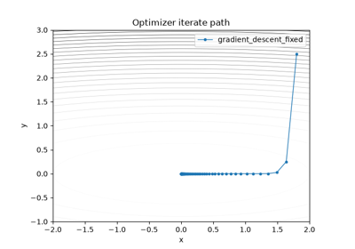
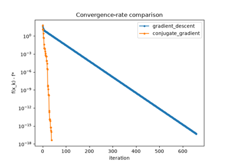
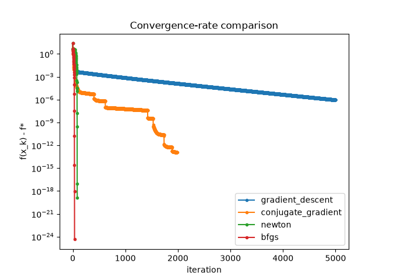

Breakthroughs in Optimization#
“Nothing in the world takes place without optimization, and there is no doubt that all aspects of the world that have a rational basis can be explained by optimization methods.” – Leonhard Euler, foreword to Methodus Inveniendi, 1744
Finding the best of something – the shortest path, the cheapest plan,
the lowest-energy configuration – is one of the oldest applied problems
in mathematics, but a systematic theory of optimization, with
convergence guarantees and complexity bounds rather than case-by-case
cleverness, is a product of the 20th century. This chronology traces the
descent methods and constrained-optimization theory behind
mathematicskit.optimization.
1847 – Cauchy and Gradient Descent#
Augustin-Louis Cauchy’s 1847 note to the French Academy proposed the simplest possible strategy for minimizing a function of several variables: repeatedly step in the direction of steepest local descent, the negative gradient. It converges from any smooth enough starting point, but notoriously zig-zags across narrow, elongated (ill- conditioned) valleys – a limitation directly visible by comparing its convergence rate against a method that adapts its step size, or against the conjugate-direction methods developed over a century later.
Implementation: mathematicskit.optimization.systems.gradient_descent.GradientDescent
implements exactly this fixed-step rule;
GradientDescentLineSearch
adds Nocedal & Wright’s backtracking line search to choose the step
size adaptively at each iterate.
References: A.-L. Cauchy, “Methode generale pour la resolution des systemes d’equations simultanees,” Comptes Rendus de l’Academie des Sciences 25 (1847), 536-538.

Fixed step vs. backtracking line search on an ill-conditioned bowl
1687 – 1806 – Lagrange Multipliers#
Joseph-Louis Lagrange’s 1788 Mecanique Analytique generalized a technique he had already sketched in an earlier 1760s memoir on the calculus of variations: to minimize \(f(x)\) subject to a constraint \(g(x)=0\), introduce an auxiliary variable (the multiplier \(\lambda\)) and look for a stationary point of \(f(x) + \lambda g(x)\) treated as unconstrained in both \(x\) and \(\lambda\) together – turning a constrained problem into an ordinary one at the cost of extra variables. William Karush’s 1939 thesis (independently rediscovered by Harold Kuhn and Albert Tucker in 1951) extended the idea to inequality constraints, giving the first-order KKT conditions still used to certify a constrained optimum today.
Implementation: mathematicskit.optimization.systems.constrained.lagrange_stationary_point()
solves exactly the equality-constrained Lagrange system directly;
verify_kkt() checks the
full Karush-Kuhn-Tucker conditions (stationarity, primal/dual
feasibility, complementary slackness) numerically at a candidate point.
References: J.-L. Lagrange, Mecanique Analytique (Paris, 1788); W. Karush, “Minima of Functions of Several Variables with Inequalities as Side Conditions” (Master’s thesis, University of Chicago, 1939); H. W. Kuhn and A. W. Tucker, “Nonlinear Programming,” Proceedings of the Second Berkeley Symposium on Mathematical Statistics and Probability (1951), 481-492.

Lagrange multipliers, KKT verification, and the penalty method
1947 – Dantzig’s Simplex Method#
George Dantzig, working on logistics planning problems for the US Air Force, formulated the general linear program – minimize a linear objective subject to linear inequality constraints – and, in 1947, devised the simplex method: walk from vertex to adjacent vertex of the constraint polytope, always improving the objective, until no adjacent vertex improves further. Despite an exponential worst case discovered only decades later, the simplex method is famously efficient in practice, and remains, alongside modern interior-point methods, one of the two workhorses of large-scale linear programming.
Implementation: mathematicskit.optimization.systems.linear_programming.linear_program()
wraps scipy.optimize.linprog(), which dispatches between a dual
simplex method and an interior-point method depending on problem
structure.
References: G. B. Dantzig, “Maximization of a Linear Function of Variables Subject to Linear Inequalities,” in Activity Analysis of Production and Allocation, ed. T. C. Koopmans (New York: Wiley, 1951), 339-347 (describing the method Dantzig developed in 1947).

1952 – Conjugate Gradients as Nonlinear Optimization#
Hestenes and Stiefel’s conjugate gradient method for linear systems (see the linalg chronology) has a direct nonlinear descendant: Reeves and Fletcher’s 1964 generalization replaces the linear residual with the gradient of a general nonlinear objective, reusing the previous search direction (weighted by a scalar \(\beta_k\)) to avoid steepest descent’s characteristic zig-zagging without ever needing second-derivative information. Polak and Ribiere’s 1969 alternative choice of \(\beta_k\), with a standard nonnegativity safeguard, tends to recover faster after an inaccurate line search in practice.
Implementation: mathematicskit.optimization.systems.conjugate_gradient.NonlinearConjugateGradient
implements both the Fletcher-Reeves and Polak-Ribiere variants.
References: R. Fletcher and C. M. Reeves, “Function Minimization by Conjugate Gradients,” The Computer Journal 7(2) (1964), 149-154; E. Polak and G. Ribiere, “Note sur la convergence de methodes de directions conjuguees,” Revue Francaise d’Informatique et de Recherche Operationnelle 3(16) (1969), 35-43.

Nonlinear conjugate gradient vs. gradient descent
1970 – BFGS and Quasi-Newton Methods#
Newton’s method for optimization converges quadratically near a minimum by using the exact Hessian to correct the steepest-descent direction, but computing (let alone inverting) that Hessian at every step is expensive. Charles Broyden, Roger Fletcher, Donald Goldfarb, and David Shanno independently arrived, all in 1970, at the same update formula for building up an approximation to the inverse Hessian purely from successive gradient evaluations – superlinear convergence without ever forming a single second derivative, still the default general-purpose optimizer in most numerical software four decades later.
Implementation: mathematicskit.optimization.systems.newton_quasi_newton.BFGS
wraps scipy.optimize.minimize()’s "BFGS" method, recording the
iterate path via its callback;
NewtonMethod
wraps the "Newton-CG" method for the case where an exact Hessian (or
Hessian-vector product) is available.
References: C. G. Broyden, “The Convergence of a Class of Double-rank Minimization Algorithms,” Journal of the Institute of Mathematics and Its Applications 6(1) (1970), 76-90; D. Goldfarb, “A Family of Variable-Metric Methods Derived by Variational Means,” Mathematics of Computation 24(109) (1970), 23-26.

All five unconstrained methods on the Rosenbrock function
1968 – Fiacco, McCormick, and Penalty/Barrier Methods#
Anthony Fiacco and Garth McCormick’s 1968 monograph Nonlinear Programming: Sequential Unconstrained Minimization Techniques gave a unified treatment of an idea with older, scattered roots (Richard Courant had proposed a quadratic penalty as early as 1943): reformulate a constrained problem as a sequence of unconstrained ones, adding a penalty term that grows without bound as a constraint is violated (or a barrier that blows up as a solution approaches the constraint boundary from the feasible side), and let that penalty weight increase toward infinity across the sequence. The limit of the resulting unconstrained minimizers converges to the constrained optimum.
Implementation: mathematicskit.optimization.systems.constrained.PenaltyMethod
implements exactly this sequential quadratic-penalty scheme, solving
each unconstrained sub-problem with
BFGS.
References: A. V. Fiacco and G. P. McCormick, Nonlinear Programming: Sequential Unconstrained Minimization Techniques (New York: Wiley, 1968).
Lagrange multipliers, KKT verification, and the penalty method
1960 – Rosenbrock’s Banana Function#
Howard Rosenbrock’s 1960 paper introduced a deliberately awkward test function – a narrow, curved parabolic valley – specifically to stress- test optimization algorithms against exactly the kind of ill-conditioning that a naive gradient-descent-style method handles badly: the valley floor is trivial to find but excruciatingly slow to follow to the true minimum without using curvature information. It remains, over sixty years later, the standard benchmark for comparing optimization methods’ convergence rates against each other.
Implementation: mathematicskit.optimization.utils.test_functions.rosenbrock()
(with its gradient and Hessian) is exactly this function, used
throughout this domain’s tests and examples as the shared benchmark
comparing gradient descent, conjugate gradient, Newton’s method, and
BFGS against each other.
References: H. H. Rosenbrock, “An Automatic Method for Finding the Greatest or Least Value of a Function,” The Computer Journal 3(3) (1960), 175-184.
All five unconstrained methods on the Rosenbrock function